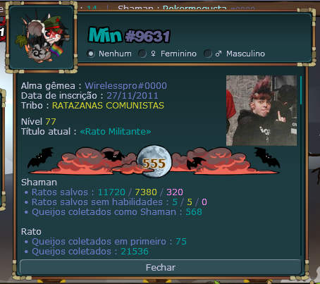
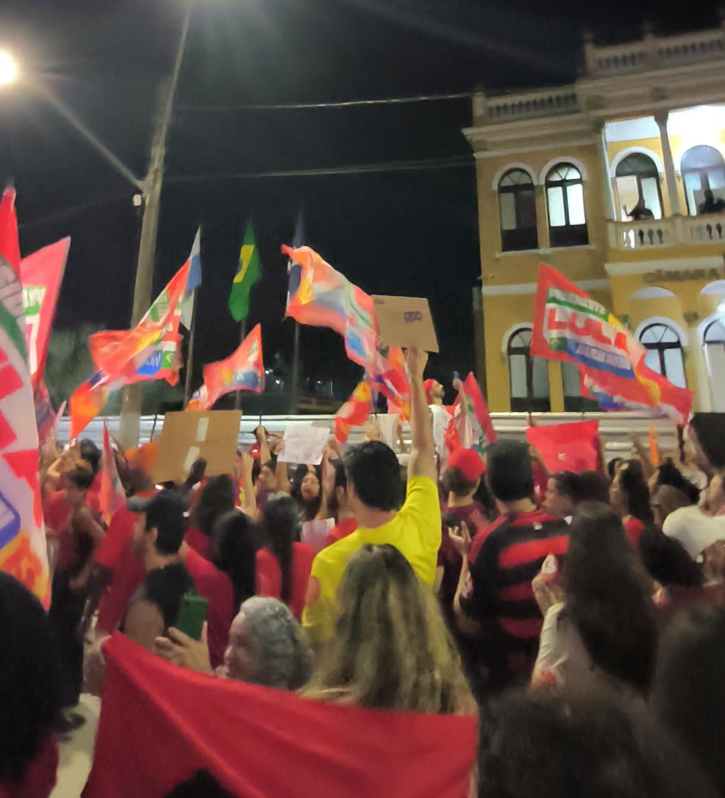
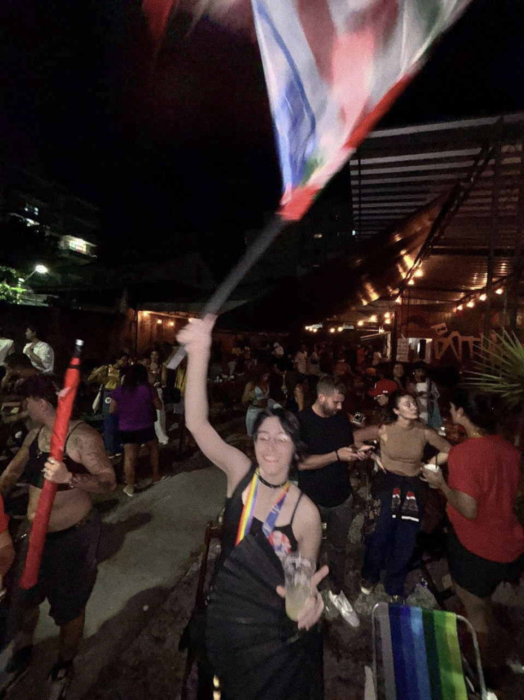
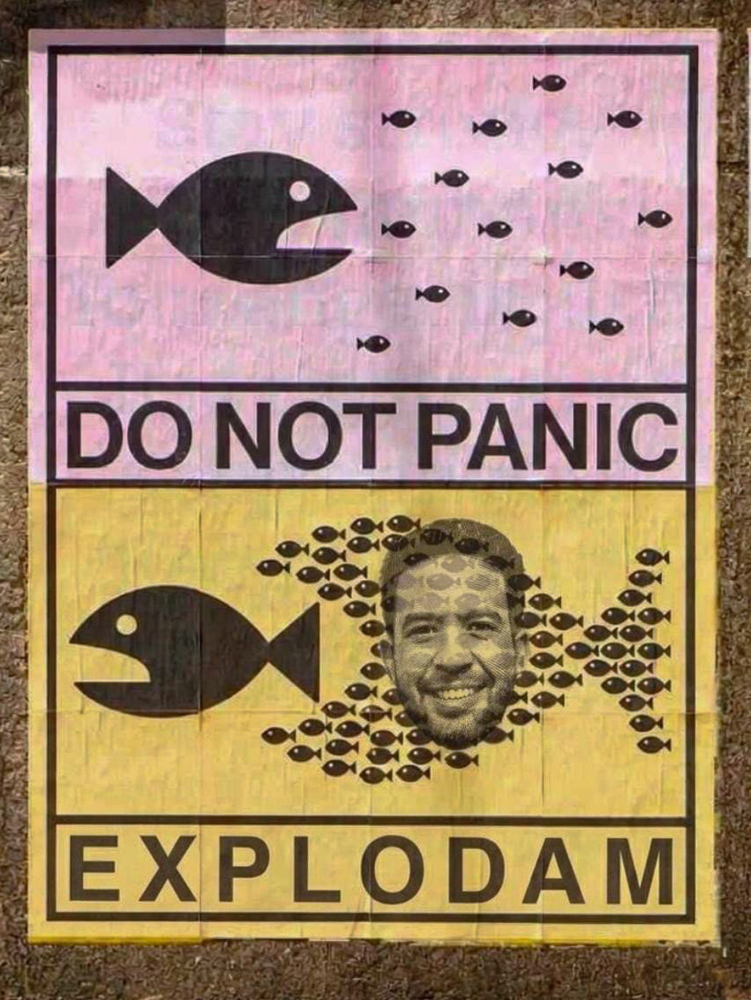
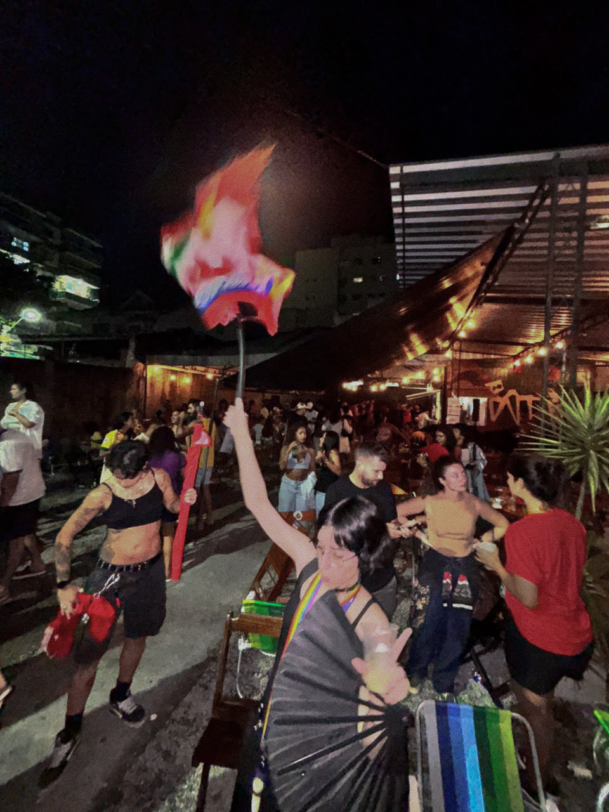
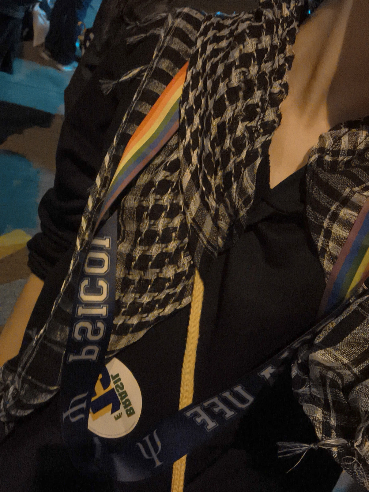
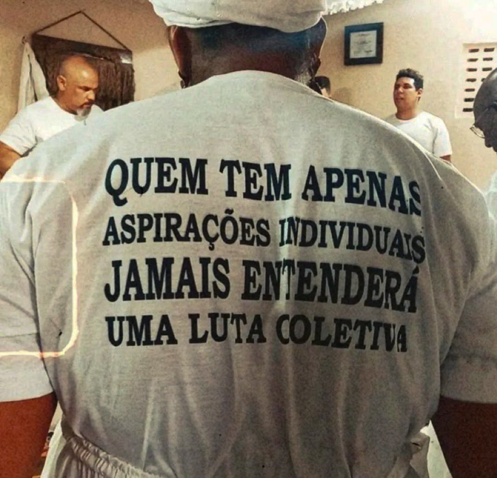
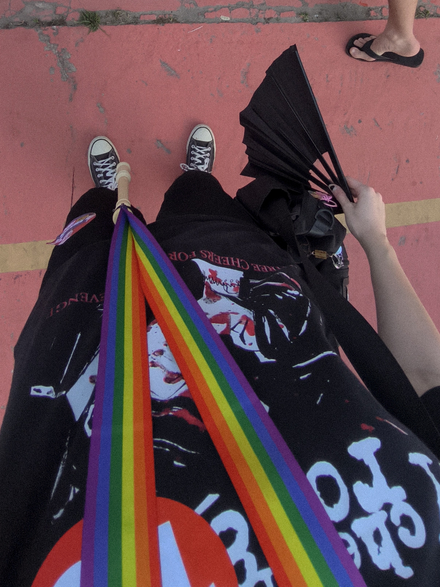
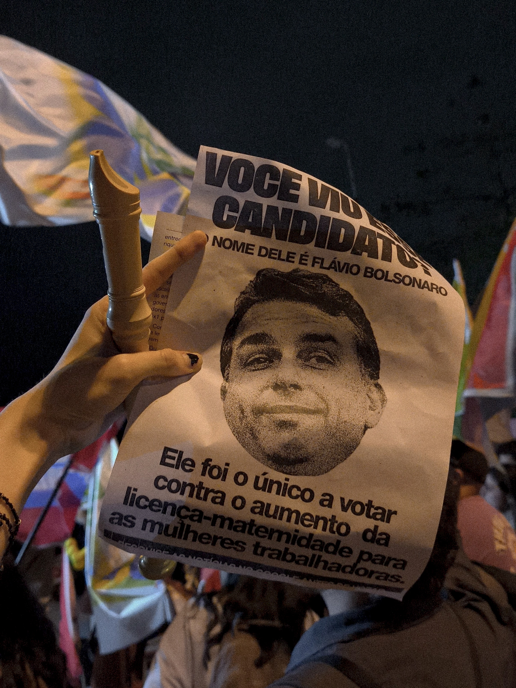

monthly blog
feel free to translate the page with the button on the sidebar on your left if you're interested enough :)
click on the titles to expand
outubro 2026
- tive aula o dia inteiro justo no dia do aniversario, mas pelo menos tive resultados bons na prova e nas esculturas, e pelo visto o professor mais carrasco do curso até q gosta de mim kkkkk :) é mto bom qnd as pessoas reconhecem suas qualidades. me presenteei também com umas roupinhas da loja
- e malditas eleições um dia depois do meu aniversário também, não queria mais uma coisa pra me estressar perto do meu aniversário, e olha que eu já fico meio estranha perto da data. acontece que não condiz com minha moral fechar os olhos para tanta injustiça e não me manifestar ou fazer minha parte. fui na minha primeira manifestação, e ralei meus dedos de tanto bater meu leque com força kkkkk, mas o que também parece fazer diferença, infelizmente, é pelas redes sociais, o que já não é muito saudável por si só. todos ao meu redor falam pra parar de ver as notícias e apagar os apps, dizendo que isso adoece (e olha que realmente, eles não estão errados), mas é exatamente isso que o sistema e os poderosos querem, conivência por silêncio. sempre pensei como eu me sacrificaria facilmente se isso garantisse que eu conseguisse fazer algum impacto positivo no mundo (altruísmo masoquista, talvez? freud já dizia como o masoquismo pode ser interpretado como uma necessidade de ser reconhecido pelo outro), então espero que perder um pouco de sanidade e paz valha a pena. por mais que eu tenha muita vontade de sair de todas as redes sociais e ficar só no meu blog, é muito dificil quebrar um hábito que faz parte da minha vida desde pequena, e a sociedade também não consegue sair pelo visto, já que tudo foi arquitetado justamente pra construir essa dependência. cada vez que posto um stories fico embasbacada como praticamente todos que eu conheço vêem as coisas que eu posto, e penso que talvez isso pode ser útil pra tentar divulgar informações contra a ascensão do f4s.cism0, e ainda assim parece não ser suficiente, pois tem gente que não aceita mais dialogar. não consigo enfiar na minha cabeça como, por exemplo, meus pais, que prezaram tanto que eu tivesse uma educação de qualidade, que tanto me elogiam pela minha inteligência, não querem mais me ouvir quando o assunto é política. sinto que não entra na minha cabeça como eles ainda caem nessa alienação da 3xtrem4-d1re1t4, sendo que as próprias ideias são tão ABSURDAS que vão contra os próprios valores e princípios, principalmente os influenciados pela religião deles, como por exemplo, jesus que andou com os pobres, dividiu o pão e disse que é mais provável um camelo passar pelo buraco de uma agulha do que um rico entrar no céu, enquanto eles caem na manipulação que seu líder tanto os avisou sobre. mas ao mesmo tempo, entendo que vocês também são vitimas desse projeto de controle social da 3lit3 bancária e p3d0fil4 dos estragos-fudidos, e vindo de um império tão controlador com tanto investimento em controle social, ainda sou surpreendida dia pós dia com a força dessa alienação. enfim, nada me radicaliza mais do que a propria realidade.
- MEGA TEXTÃO SOBRE AS ELEIÇÕES:
quem me conhece sabe que eu nunca fui de literalmente ir pra rua e botar a cara pra defender p0lít1c0. mas também, quem me conhece sabe que eu sempre coloquei os outros acima de mim, do meu próprio bem-estar, e sempre me preocupei com a causa animal, da natureza e dos d1r31t0s hum4n0s. seria hipocrisia da minha parte não ter feito o L. não estou falando como se isso fosse sobre uma lut4 p4rt1dár14, mas sim humanitária. e apesar de ter conseguido transmitir as minhas ideias pra algumas pessoas, sei que tem gente que ainda tem as muralhas muito firmes pra isso, e que também nem todo mundo está preparado, nem todo mundo tem acesso à informação e à educação, ou sequer tem tempo pra entender como e por que o mundo funciona desse jeito, por ter que trabalhar. obviamente não temos o poder de fazer as pessoas entenderem sua visão subjetiva magicamente; cada um tem o seu tempo de aprendizado e de despertar.
esse mês foi muito atípico na minha vida. novamente, quem me conhece sabe também que eu não sou muito fã de sair de casa. esse mês foi a primeira vez que fui a m4n1f3st4çõ3s na rua e me arrependo de não ter ido antes, porque foram experiências maravilhosas. a energia era muito positiva, as pessoas muito unidas e organizadas; nem copa nem carnaval chegaram aos pés do que aconteceu essa semana. saí de casa, peguei sol, revi meus amigos, e até conheci pessoas legais que pensam parecido comigo e, acima de tudo isso, sinto que me conectei ainda mais com o meu propósito nessa vida, que é tentar espalhar o bem e tentar, na medida do possível, ajudar a melhorar o mundo.
dessa forma, eu não só fui pras ruas, como também direcionei tempo e energia consideráveis, que poderiam ter sido investidos na minha própria vida, nos meus planos e interesses individuais. penso que seria uma grande hipocrisia da minha parte não fazer isso, e também, minha consciência não me deixou em paz; iria contra a minha moral desviar minha atenção disso. acho que eu sempre fui muito rebelde, com um senso de justiça forte, e também uma grande dificuldade de aceitar que as pessoas podem tomar decisões imprudentes por medo, ou que uma pessoa possa te amar e ainda assim pensar diferente de você (acho que isso pode ser uma rigidez cognitiva da minha parte). eu penso como penso desde muito tempo, mesmo antes de sequer entender o que eu pensava ou por que pensava. moral, senso de justiça e empatia são coisas que deveriam acompanhar a gente desde sempre. mas pra quem tem esse conhecimento, sinto que é um dever ético e moral compartilhá-lo.
nessa última semana eu engajei muito, seguindo as “ordens”, entre aspas, do “3x3rc1t0 do Lul4”, e criei conta em uma rede social que eu nunca tinha baixado. e nós, mais de 10 milhões de pessoas, tivemos um papel importantíssimo, carregando o peso de estar lut4nd0 pelo futuro do país e pela vida das pessoas que não têm voz. nessas eleições eu botei a cara, e isso só aumentou o meu gás pra lut4r pelo que eu acredito. eu nunca vi tanta gente unida na paz, feliz e organizada. como o J4n0n3s mesmo falou, nós somos um só. essa massa gera uma sensação de pertencimento, e sei que infelizmente pode passar, mas eu espero que não passe, porque se a gente continuar unido, ainda conseguimos conquistar muita coisa.
se a gente conseguiu fazer uma parte da população entender por que não votar no b0ls0n4r0, e por que toda essa urgência de votar em Lul4, mesmo indo contra sua índole, acredito que conseguimos fazer as pessoas despertarem sobre a importância dos seus direitos, da sua liberdade, de justiça e de um bem-estar geral. isso deveria ser o certo pra todo mundo, e a gente também deveria desejar isso pra todos, sem exceção. espero não estar muito iludida ou eufórica, mas às vezes penso que a gente conseguiria fazer uma r3v0luçã0, talvez... e tem muita gente que, em nome de uma igreja ou de um p0lít1c0, acha que está fazendo o que é melhor pro próximo. mas, com essa mobilização, ajudamos a fazer as pessoas perceberem que essa eleição não foi só sobre p4rt1d0 brasileiro, não foi só sobre o Lul4.
eu sempre gostei muito de história, e a única coisa que eu fiz na vida foi estudar e absorver conhecimento na internet e em livros. até o meu guilty pleasure em teoria da c0nsp1r4çã0 entra nisso: não é um conhecimento ilegítimo, mas é o conhecimento que vem da população, horizontal, que alimenta esses mesmos pensamentos críticos que eu tento exercitar. com bastante informação (às vezes até em excesso), consigo entender como todo o mal do mundo está conectado e como às vezes é necessário fazer coisas que a gente não quer por um bem comum.
eu nunca demonstrei apoio claro e explícito ao Lul4, até por medo do julgamento de pessoas que nunca gostaram dele. quando eu era mais nova, eu não ligava pra p0lít1c4. com estudo e sede por conhecimento, eu entendi a importância de sim ligar pra p0lít1c4. não precisa trabalhar 12 horas por dia ou até mais, não precisa sentir a dor na pele pra entender e sentir a dor do outro. e com tudo isso consigo perceber que, mesmo com falhas, mesmo com muita acusação, ele ainda é, de todas as opções, o que mais se preocupa com as pessoas que não têm voz. pra mim, é impossível não favorecer o lado que pensa num bem-estar comum, universal. seria hipocrisia demais, depois de tudo que eu já acreditei e de tudo que eu sou. não tem como ver professores, artistas, cientistas, trabalhadores, estudantes, mulheres e todos os meus amigos sendo atacados e desvalorizados e ficar do lado de quem os ataca. seria ir contra tudo que eu sou e em que eu acredito.
o mínimo que eu pude fazer nesse tempo, principalmente nessa última semana, foi dar voz a essas pessoas e espalhar esse conhecimento: compartilhando informação, engajando nas redes, investindo meu tempo e minha energia, dialogando com gente que não está de coração aberto, ou preparada, ou que não tem capacidade ou contexto pra entender a situação toda. sei que também me falta muito conhecimento, vivência e experiência. mas mesmo reconhecendo meu privilégio, mesmo nunca tendo me faltado nada na vida, ainda é possível pensar e se colocar no lugar do outro. não precisa ser crente, não precisa ser pobre, não precisa ser negro, não precisa ser lgbtq, não precisa ser mulher, nativo, ou qualquer categoria perseguida. e eu acho que isso deveria ser mais claro: é sobre humanidade, não é sobre p4rt1d0 p0lít1c0.
me parte profundamente o coração ver pessoas que eu amo tanto, que me amam tanto e que me acham bondosa e inteligente, ainda não quererem tentar entender a minha visão e debocharem da minha felicidade com os resultados. é DESESPERADOR ver gente que não gosta de estudar, não se interessa por história, não tem empatia, não tem altruísmo, pensando que NÓS estamos no lado errado. só quem realmente tá informado entende como isso é muito maior do que p4rt1d4r1sm0, e penso que tudo isso é a humanidade perdendo a sua essência e se tornando cada vez mais individualista.
por mais libertador que seja finalmente entender essa grande gu3rr4 que é a lut4 entre 3sq43rd4 e d1r31t4 no Brasil e na p0lít1c4, eu ainda fico muito triste de ver como as pessoas acham que é tudo igual, que os candidatos são todos iguais. não tem como. como alguém consegue colocar um f4n4t1sm0 4l13n4d0 contra literalmente vidas, bem-estar e direitos básicos? como não consegue enxergar a gravidade? como não consegue sentir empatia e se colocar no lugar do outro? e o que eu mais não consigo entender é ver cristãos, que tanto impõem os ensinamentos de Jesus, votando na d1r31t4, sendo que isso é literalmente o contrário de tudo que ele tentou passar e nos avisar. eu gosto de acreditar que, como diz o pusher174, Jesus foi o primeiro c0mun1st4. e isso até começou a me tirar um pouco do ateísmo.
é uma sensação de que as peças se encaixam, sabe? eu enxergo tudo isso como um grande projeto, e é tão grande que, às vezes, a gente, cidadão comum, não tem como desfazer uma l4v4g3m c3r3br4l com tanto investimento externo e b1l10nár10. gente que, mesmo com toda a informação na palma da mão, literalmente, não está preparada pra enxergar a verdade. em parte eu entendo isso como um mecanismo de defesa, porque realmente não é fácil, é muito difícil enxergar tanta dor no mundo e lidar com a sensação de que não podemos fazer nada a respeito. não é fácil criticar a si mesmo e também as autoridades, e o mundo todo não incentiva essa prática. pelo contrário, age de propósito pra que a gente não seja crítico. algoritmos de empresas b1l10nár14s controlam descaradamente qual informação a gente recebe ou não.
mas é justamente com conhecimento, estudo, análise, crítica, disseminação desses conhecimentos valiosos e, principalmente, gente organizada que ainda é possível fazer mudança. eu não sei se estou iludida, se estou, entre muitas aspas, em “ps1c0s3 p0lít1c4”. esse próprio termo, que viralizou no país inteiro, até mesmo em pessoas que nunca pararam pra estudar o que seria uma psicose, foi usado pra DESLEGITIMAR a r3v0lt4 da população que tanto sofre nas mãos da 3l1t3. mas sinto que depois dessa semana a minha esperança aumentou muito. esperança no futuro, na humanidade, no país. sei que ainda temos um caminho muito grande pela frente, mas é muito bonito estar presenciando uma das maiores organizações digitais populares da classe pr0l3tár14. e eu espero que toda essa energia e mobilização nos leve ao caminho da r3v0luçã0 popular.
às pessoas que ainda não despertaram: eu sinto muito por vocês, por não reconhecerem que fazem parte de um sistema de 3xpl0r4çã0 c0rrupt0 e injusto. me disponibilizo de braços abertos pra tentar conversar um pouco sobre o que eu penso. e aos s0ld4d0s que estavam ao meu lado nessa gu3rr4, aos colegas que estão ao meu lado, foi muito bom ter lut4d0 com vocês. que a gente se cuide depois dessa semana turbulenta, mas não descanse pra sempre, e que estejamos sempre alerta pra nos unir assim de novo. assim, acredito que a gente vai longe.
e com todo meu conhecimento, esforços e a minha sede por justiça e informação, eu espero conseguir, como minha missão nesse planeta, fazer as pessoas serem mais conscientes e terem mais consciência da nossa real posição na sociedade.
com muita esperança, amor e resistência. paz entre nós , guerra ao sistema.
min
(censurei as palavras pois logo após commitar cada update desse mês no site, vi muitos acessos suspeitos dos 3str4g0s-fud1d0s, vindo do mesmo lugar, e a esse ponto nao sei se estou em neurose p0lític4 ou paranóica ou os dois. pelo visto a pesquisa ta sendo automatizada)
músicas do mês









setembro 2026
- fiz uma aula experimental de yoga, queria mto fazer mas o studio era na frente de uma avenida barulhenta :(
- pensando muito como algumas amizades virtuais, que fiz sem querer e sem expectativas, acabaram me compreendendo respeitando e fazendo mais questão da minha presença do que grande parte das amizades que fiz pessoalmente 🤡.
- cara, a conta de anos de negligencia alimentar e de vida sedentaria ta batendo na porta, estou precisando muito de proteínas e talvez seja pq estou completando praticamente 10 anos de vegetarianismo, e ta sendo muito dificil me forçar a comer em grandes quantidades, pra tentar nao precisar recorrer a medidas drásticas que vao contra minha moral, ainda mais tendo algumas seletividades alimentares :( (update: estou comendo mta carne de soja ovo whey e homus!!)
- fui num evento de desenho aqui na cidade, foi em um bar perto da casa que morava antigamente. infelizmente fui embora cedo por perturbações de forças maiores, mas foi muito legal, no proxima vou ficar mais tempo!! n vejo a hora de marcarem o proximo
- fui pela primeira vez num laboratório de protese, confesso q to um pouco ansiosa (ou desesperada) pra ter um emprego de vdd logo k
- e falando em prótese, fui pegar pra praticar escultura em casa e minha lamparina, mesmo com os botões de escape de pressão todos ok, deu um mini pulinho de explosão, derrubou alcool na bancada do meu quarto, pensei que seria o momento que eu acidentalmente taco fogo na casa, e incrivelmente consegui apagar assoprando, mas fiquei apavorada. preciso urgentemente de um gotejador eletrônico.
- também tive uma nova descoberta alimentar, um tal de "biscoff", uma pasta de biscoito com caramelo, muito bom, pena que acabou antes do que deveria
músicas do mês

agosto 2026
- estou tendo aquela famosa crise de transição pra vida adulta, definir o que quero fazer da minha vida profissional, ê fase chata. mas sei que estou bem empolgada com protese tmb.
- andei de patins com meu namo, e ele de skate, foi irado mas ainda estou passando muito perrengue, preciso de uma roda maior e mais macia


julho 2026
- adivinha quem recebeu laudo pra Audhd?
- estou animada com meu curso de protética, é mto bom se sentir empolgada em aprender algo novo :)
- estou viciada dnv no jogo transformice, que jogo desde 2011, e fiz mais amizades legais la!!!
- tmb estou obcadissima com as midias recentes dos shows do mcr na europa, minha banda fav ta vivissima <3
- também estou assistindo twin peaks com meu namorado e estou gostando bastante.
- tenho acompanhado também a copa, passando muita raiva com a argentina e mta admiraçao pelo haaland e bellingham.
- ganhei um prêmio no curso por ter tirado primeiro lugar na prova feita por kahoot kkkk
- criei também uma pagina para minha clínica psi, mas to super ansiosa e insegura k
músicas do mês


laricas
alguns dos outros "hiperfocos" e novas descobertas gastronômicas marcantes (também vou adicionando mais depois):
- chá de canela
- macarrão carbonara
- macarrão de legumes (cenoura e abobrinha cortadas finas igual macarrão)
- cenoura fatiada na frigideira, com temperos
- vitamina de abacate
- geléia (com biscoito com açucar, tapioca)
- tomate seco (assim, não fica crocante, muito gostoso)
- morango. morango com chocolate. morango com açucar.
- pasta de grão e bico (hummus hommus ou houmous)
- semente de girassol tostada na frigideira na manteiga!!!